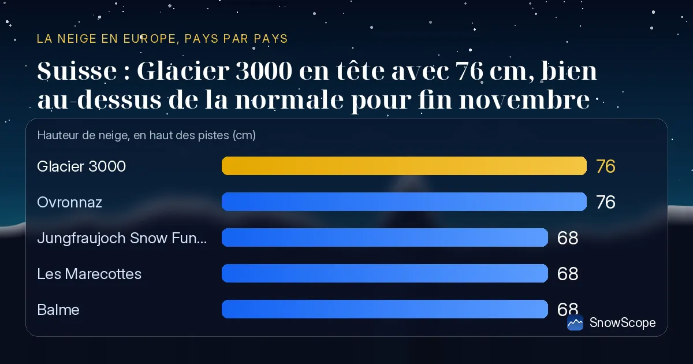

Suisse : Glacier 3000 en tête avec 76 cm, bien au-dessus de la normale pour fin novembre
La Suisse affiche un enneigement bien supérieur à la normale pour fin novembre. Glacier 3000 atteint 76 cm, ce qui est plus rare qu'en neuf hivers sur dix à cette date.
Consultez les prévisions neige en temps réel pour Glacier 3000 sur l'application SnowScopeHauteurs de neige, alertes poudreuse et carte 3D, gratuitement.
Au-delà de la normale de neuf hivers
Glacier 3000 affiche désormais 76 cm. Cette épaisseur dépasse ce que la montagne a connu le 23 novembre en neuf années sur les dix dernières. L'épaisseur habituelle à cette date est de 27 cm, donc la neige actuelle est près de quatre fois supérieure à la normale. C'est le genre d'avance qui redéfinit un début de saison.
Cinq des principales stations suisses affichent des chiffres bien supérieurs à leur moyenne saisonnière. Ovronnaz atteint 85 cm contre une normale de 22 cm. Les Marecottes et Balme, des stations basses dans les Alpes du Valais et la chaîne du Mont-Blanc, ont bondi à 68-70 cm contre une normale de 28-31 cm en fin novembre. Même Jungfraujoch Snow Fun Park, qui se situe à une altitude où la neige est toujours abondante, affiche 95 cm alors qu'il en voit normalement 83 cm à cette époque.
| Station | Aujourd'hui | Normale à cette date | Part de la normale |
|---|---|---|---|
| Glacier 3000 | 76 cm | 20 cm | 380 % |
| Ovronnaz | 76 cm | 20 cm | 380 % |
| Jungfraujoch Snow Fun Park | 68 cm | 59 cm | 115 % |
| Les Marecottes | 68 cm | 27 cm | 252 % |
| Balme | 68 cm | 30 cm | 227 % |

Trois zones chaudes en trois jours
Les 72 dernières heures ont apporté 79 cm dans la région. La neige n'est pas tombée uniformément. L'Oberland bernois a atteint 144 cm en trois jours, les Alpes du Valais 139 cm, et la Suisse centrale 103 cm. Glacier 3000, qui se situe dans le massif bernois, a reçu 99 cm durant cette période et est actuellement en tête de tous les postes de mesure.
Ce type de dépôt se produit quand l'air humide frappe les hautes crêtes par le nord. La neige en début de saison est typiquement légère et se tasse rapidement, mais 144 cm en trois jours sur terrain raide est un signal à respecter. La limite des neiges se situe à 900 m aujourd'hui ; en dessous, l'enneigement est fragmentaire et le sol reste souvent visible.

L'altitude fait toute la différence
L'épaisseur de neige augmente fortement avec l'altitude. Entre 500 et 1 000 m, la moyenne est de 1 cm avec 29 pour cent de couverture. À 1 000-1 500 m, la moyenne atteint 7 cm avec 84 pour cent de couverture. Entre 1 500 et 2 000 m, on observe 18 cm et une couverture quasi totale. Au-dessus de 2 000 m, la neige s'épaissit à 24 cm entre 2 000 et 2 500 m, et à 36 cm au-dessus de 2 500 m, avec 100 pour cent de couverture.
Ce portrait en couches raconte l'histoire d'une saison humide qui s'est installée tôt en haute altitude mais qui n'a pas encore créé une base stable aux stations basses. Les rochers, l'herbe et les zones minces marquent encore de nombreuses pentes en dessous de 1 500 m.
Encore de la neige en approche
Au cours des trois prochains jours, la prévision annonce jusqu'à 25 cm. La journée la plus enneigée sera le 25 novembre, avec environ 20 cm attendus. La semaine à venir devrait accumuler jusqu'à 29 cm sur la fenêtre de prévision. Ce rythme n'est pas typique ; il signifie que les montagnes captent la fin d'un système actif peu courant en fin novembre.
Au-delà du jour 7, la deuxième semaine s'annonce beaucoup plus calme. Seuls 3 cm sont attendus entre le 1er et le 7 décembre. L'impulsion de neige actuelle est l'événement à suivre et à skier tant qu'il dure.
Tendance : une semaine d'accumulation
Il y a une semaine, seuls 16 100 km² de la région avaient de la neige. Hier, c'était 21 990 km². Aujourd'hui, c'est 23 710 km². C'est un gain de 7 610 km² en une semaine. Le bond des 24 dernières heures seul a représenté 1 720 km², avec 76 pour cent de la région cartographiée maintenant blanche.
Glacier 3000 a mené le classement pendant cinq des sept derniers jours. Cette constance montre que les hauts sommets de l'Oberland bernois sont le pivot de cet événement, attirant le plus d'humidité et maintenant la limite des neiges la plus haute.
Ce que vous devez savoir
La neige en début de saison est légère et peut cacher des rochers et des zones accidentées, particulièrement en dessous de 1 500 m. Vérifiez les conditions locales et consultez le bulletin officiel d'avalanche avant de partir hors-piste. La fenêtre de bonne neige se rétrécira à nouveau après cette semaine, donc les prochains jours sont le moment idéal pour le terrain en altitude où la profondeur et la couverture sont les plus fiables.
Conseils aux skieurs
- Glacier 3000, Ovronnaz et Jungfraujoch Snow Fun Park sont les leaders en épaisseur ; tous trois dépassent 68 cm et se situent au-dessus de 2 195 m où la couverture est totale.
- Restez au-dessus de 1 500 m si vous voulez une couverture de neige continue. En dessous de cette altitude, les rochers et les zones dégagées sont courants même après la chute récente.
- Les trois prochains jours apporteront de la neige, le 25 novembre étant le jour le plus chargé. Planifiez votre visite pour profiter de la neige nouvelle avant qu'elle ne se tasse.
- La neige en début de saison est typiquement légère et peut cacher des dangers. Consultez le bulletin officiel d'avalanche avant de skier hors-piste.
- Cette vague est rare pour la date et ne durera pas ; la semaine après le 25 novembre sera beaucoup plus sèche.
À propos de ces chiffres
Les hauteurs de neige des stations sont la neige la plus épaisse sur le haut du domaine à la date indiquée ; ce sont des estimations pour une zone, pas une mesure en un point. Les prévisions peuvent changer. Consultez toujours le bulletin d'avalanche officiel avant le hors-piste.
Citer ce bulletin
Pour la recherche, l'enseignement ou la presse : chiffres et graphiques réutilisables librement sous CC BY 4.0 avec cette citation.
SnowScope (2026), Suisse : Glacier 3000 en tête avec 76 cm, bien au-dessus de la normale pour fin novembre, https://snowscope.app/blog/fr/2026/11/switzerland-rare-early-snow-23-november-2026.html, consulté le 2026-11-23
SnowScope (Atlas Labs). (2026, November 23). Suisse : Glacier 3000 en tête avec 76 cm, bien au-dessus de la normale pour fin novembre. SnowScope snow reports. https://snowscope.app/blog/fr/2026/11/switzerland-rare-early-snow-23-november-2026.html
BibTeX
@misc{snowscope2026switzerlandrareearlysnow,
author = {{SnowScope (Atlas Labs)}},
title = {Suisse : Glacier 3000 en tête avec 76 cm, bien au-dessus de la normale pour fin novembre},
year = {2026},
month = nov,
howpublished = {\url{https://snowscope.app/blog/fr/2026/11/switzerland-rare-early-snow-23-november-2026.html}},
note = {Published 2026-11-23 14:06 UTC; accessed 2026-11-23}
}· CC BY 4.0 · Méthodes, données et outils →
Glacier 3000 : neige et température selon l'altitude, cet hiver vs l'hiver dernier (outils) →
Suivre Glacier 3000
Gratuit : un message quand la neige arrive, et la météo chaque matin.